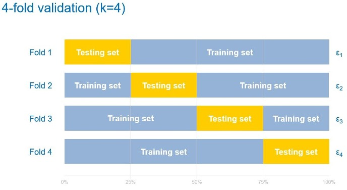
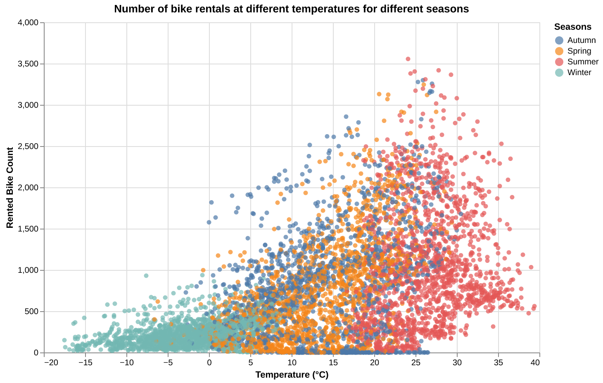
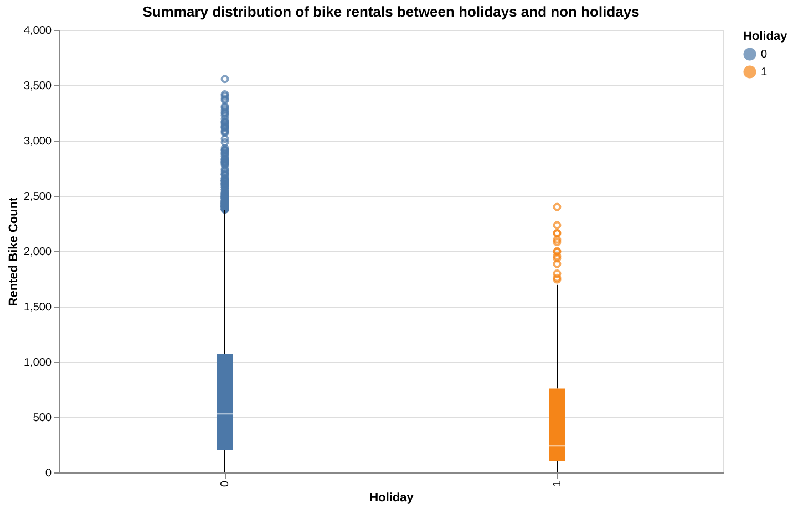
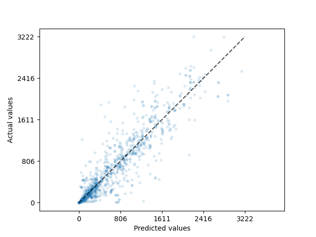

üöÄ Introduction
Have you ever walked up to a bike-sharing station and found it empty just when you needed a ride? Frustrating, right? What if bike-sharing systems could predict exactly when and where people will need bikes, ensuring they’re always available? That’s where data science comes in! This project explored how weather, time, and events impact bike-sharing demand. Using data from Seoul’s bike-sharing system, we developed predictive models to uncover patterns and provide insights that could help bike-sharing companies improve their services.
❓ The Problem
The challenge that bike-sharing programs consistently need to overcome is the availability of bikes at any given time and location. Demand varies according to time of day, weather, and season, complicating the issue further. Without an accurate forecast, riders may be confronted with either empty stations or delayed service, defeating the very purpose of convenience these programs aim to provide. A data-driven approach will accurately forecast bike demand and thus allow for better planning in the interest of operational efficiency.
üîç What We Looked At
To address this challenge, we analyzed a detailed dataset from Seoul’s bike-sharing program. The dataset included:
- Weather Data: These include temperature, humidity, wind speed, and visibility, factors that might be very influential in people’s decisions to ride or not.
- Temporal Information: Patterns concerning the time of day, day of week, and season. For instance, rush hour and summer days are periods of high demand.
- Event Indicators: Data regarding holidays and whether the system was up or not; holidays tend to have lower demand, while weekdays are usually more consistent.
We cleaned up the data before diving into the analysis. One thing we noticed was that the “Dew Point Temperature” variable was basically telling us the same thing as regular temperature - they moved up and down together. Since it wasn’t adding any new insights and could actually mess with our machine learning predictions, so we decided to drop it.
Curious about the issue? Check out this link.
üå¶Ô∏è How Weather Affects Bike Demand
Weather plays a huge role in bike-sharing. Factors such as temperature, humidity, and wind speed directly influence people’s decisions to get on a bike. For instance, higher temperatures usually increase the number of cyclists, while very low temperatures or high humidity may decrease the number. Time of day and events such as holidays are also important. The morning and evening hours of commuting have the highest demand, while holidays usually have fewer rentals because of the reduced number of work commutes.
üìã Methods
To predict bike-sharing demand, we tested two machine learning models: Decision Tree and Ridge Regression and each model brought unique strengths to the table.
Decision Tree
Think of this model as a flowchart that splits the data into smaller groups based on patterns. For example, it might first look at the temperature, then the time of day, and figure out how these factors affect bike demand. Decision Trees are great for identifying complex patterns in the data, especially when the relationships aren’t straightforward.
To explain how a Decision Tree works, I’ve included a simple example about classifying birds. Here’s how the model splits the data step by step:
- First, it checks if the animal can fly.
- Next, it checks if it lays eggs or has feathers.
- Based on this information, it classifies the animal as a bird (like a penguin or a sparrow) or a mammal (like a bat). 
Source: Decision Tree
- Ridge Regression:
- A simpler, linear model, Ridge Regression creates a straight-line relationship between features and outcomes. While less flexible than Decision Trees, Ridge Regression is more resistant to overfitting and provides a useful benchmark for comparison. I won’t go into much detail here, but if you’d like to learn more about Ridge Regression, feel free to check this out.
You need to be familiar with Linear Regression and linear algebra to understand Ridge Regression.
üîÑ Training and Validation
To ensure our models made accurate predictions, we split the data into two parts:
- Training data: Used to teach the models.
- Testing data: Used to evaluate how well the models learned.
We also applied Cross-Validation, a method that divides the training data into multiple subsets and rotates between training and validating. This approach ensures the model’s performance is consistent and not based on luck. For example:
- The data is split into five subsets.
- Each subset is used as a validation set once, while the remaining four are used for training.
- The results from all validation sets are averaged to gauge overall accuracy.
Think of this as teaching someone to cook. First, they practice using most of the recipes in a cookbook. Then, they are tested on a few hidden recipes. Repeating this process multiple times gives a more reliable assessment of their skills.

Source: Cross-validation
⚖️ Evaluation
We used the R² score to evaluate the models. This metric indicates how well the model explains the data:
- 0%: The model performs no better than random guessing.
- 100%: The model makes perfect predictions.
- For example, an R² score of 80% means the model explains 80% of the variations in bike rentals.
üí° Key Insights
Our analysis revealed several valuable insights into the factors that influence bike-sharing demand:
Seasonal PatternsOne of the clearest trends was the seasonal variation in bike rentals. Demand was highest in summer, particularly during commuting hours (morning and evening), as warmer weather encouraged more people to cycle. In contrast, winter saw a significant drop in rentals due to colder temperatures and potentially hazardous conditions like snow or ice. Spring and autumn showed moderate demand, aligning with their milder weather. As shown in the graph, summer sees a much higher rented bike count compared to winter, where the count is relatively low and concentrated in the bottom-left region.

Another important finding was the difference in demand between holidays and non-holidays. On holidays, rentals were significantly lower, likely because fewer people were commuting to work or school. In contrast, weekdays saw higher and more consistent demand, reflecting the regular schedules of commuters. As illustrated in the box plot (0: No Holiday, 1: Holiday), bike rental counts on non-holidays have fewer outliers and shorter whiskers, indicating more consistent demand compared to holidays, which exhibit greater variability and a higher number of outliers.

The Decision Tree model outperformed Ridge Regression, achieving an R² score of 0.8, meaning it explained 80% of the variation in bike-sharing demand. Ridge Regression, while simpler, achieved an R² score of 0.68, indicating limitations in capturing complex, non-linear relationships. Scatter plots comparing predicted and actual values further illustrated the Decision Tree’s accuracy, particularly for lower-demand scenarios. While there were some mispredicted points (mainly in the top-left corner), the overall predictions were relatively accurate.


üì¢ Why It Matters
These insights are not just academic—they have real-world implications for bike-sharing companies and their users.
Placing Bikes Where They’re Needed: During peak times, such as summer mornings, bike-sharing companies can allocate more bikes to residential areas to meet commuter demand. Similarly, stations near offices and train stations might need extra bikes in the evenings.
Reducing Wait Times: By predicting demand more accurately, companies can ensure that users rarely face empty bike racks or full return stations, improving the overall user experience.
Improving Operational Efficiency: Data-driven decision-making can help companies reduce waste, such as the costs of moving bikes unnecessarily or maintaining underutilized stations. Optimized bike-sharing systems also contribute to broader societal goals. By making cycling more convenient and reliable, these programs encourage sustainable transportation, reducing car usage and cutting greenhouse gas emissions.
üìå Conclusion
Our project demonstrates the power of data science in solving real-world challenges. By analyzing patterns in weather, time, and events, we developed predictive models that can help bike-sharing programs meet demand more effectively. While the Decision Tree model outperformed Ridge Regression, both approaches highlighted the importance of using data to drive decisions. Looking ahead, incorporating additional data, such as real-time weather updates or social events, could improve prediction accuracy. Exploring advanced techniques like ensemble models—combinations of multiple machine learning algorithms—might also yield better results. Ultimately, the success of this project underscores the value of data-driven solutions in urban planning. By leveraging data science, bike-sharing companies can enhance their operations and contribute to a more sustainable and efficient future for cities worldwide.